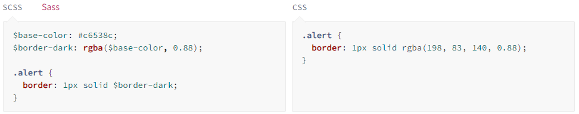
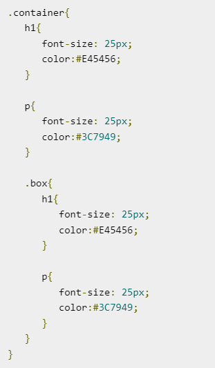
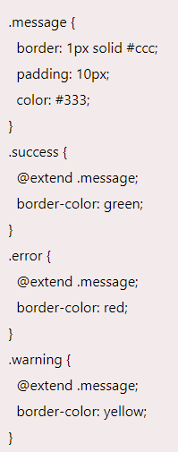
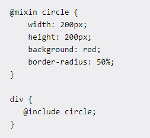

SASS or Syntactically awsome style its a CSS preprocessor which is used to reduce repetition with CSS and save time. It adds power and elegance to the basic language and facilitates you to add variables, nested rules, mixins, inline imports, inheritance and more, all with fully CSS-compatible syntax.

SASS was developed by Natalie Weizenbaum and was designed by Hampton Catlin. So, Hampton Catlin is credited as the designer of SASS, and he is also known as the father of SASS.
The SASS is useful in reducing the usage of CSS which will reduce the time and saves the code that in turn increases code reusability and reduces code redundancy. It provides own syntax for the CSS provides in developing more efficient code. SASS is a superset of CSS which is easier to use and it contains all the features of CSS
Sass variables are simple: you assign a value to a name that begins with $, and then you can refer to that name instead of the value itself. But despite their simplicity, they're one of the most useful tools Sass brings to the table. Variables make it possible to reduce repetition, do complex math, configure libraries, and much more.
Nesting is combining of different logic structures. Using SASS, we can combine multiple CSS rules within one another. If you are using multiple selectors, then you can use one selector inside another to create compound selectors.
In Sass, @extend is used to share a set of CSS properties from one selector to another. It is a very important and useful feature of Sass. The @extend feature of Sass allows classes to share a set of properties with one another. In complicated CSS where many classes are put together, duplication of properties may occurs. The @extend features makes your code less and facilitates you to rewrite it repeatedly.
Mixins allow you to define styles that can be re-used throughout your stylesheet. They make it easy to avoid using non-semantic classes like .float-left, and to distribute collections of styles in libraries.
